Префектура Кагосима · Амами-Осима · природа и культура
Амами-Осима неспешно: отель MIRU AMAMI, ткань из грязи, лес духов и куриный суп кэйхан
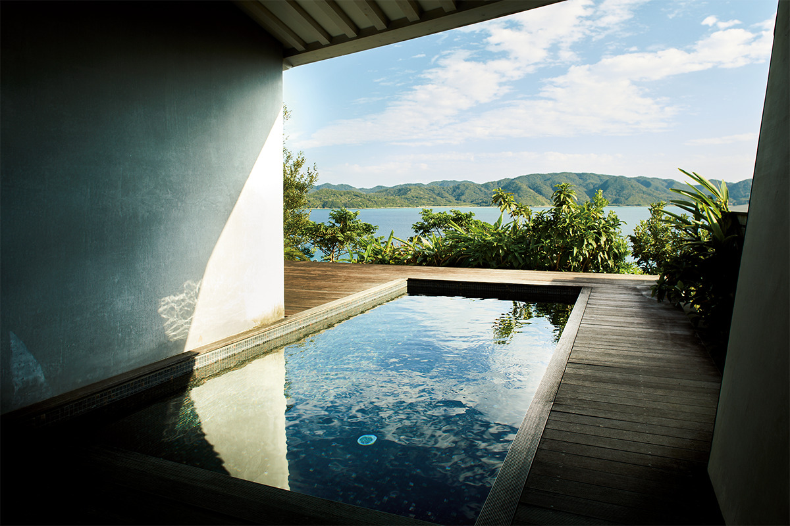
На Амами-Осиме веками встречались культуры Рюкю и Сацумы, и из этой встречи вырос свой, ни на что не похожий остров. Сюда едут не только за морем и лесом: здесь ткут шёлк, окрашенный грязью, едят блюда острова долгожителей и до сих пор находят богов в камнях и деревьях.
Остров
Где встретились Рюкю и Сацума
Амами-Осима самый большой остров архипелага Амами на юге префектуры Кагосима. В его первобытных лесах из субтропических широколиственных деревьев живут амамийский кролик и сойка Лидта, оба охраняются государством как природные памятники. Море здесь такое прозрачное, что остров давно известен среди любителей снорклинга.
Но природой дело не ограничивается. С XIV века Амами был точкой, где сходились пути между главными островами Японии и Окинавой, и культура острова сложилась из двух начал: рюкюского и сацумского. Это чувствуется во всём, от ремёсел до кухни. Здесь ткут осима-цумуги, шёлк с историей в 1300 лет, а местное блюдо кэйхан и другие простые кушанья напоминают, что Амами считают островом долгожителей.
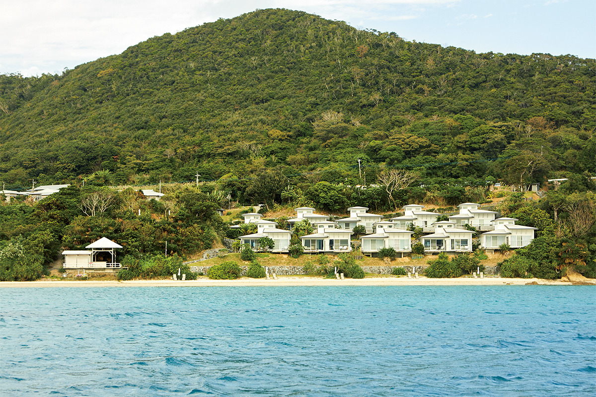
Отель
MIRU AMAMI: «новая деревня» на берегу
Базой для поездки мы выбрали MIRU AMAMI в посёлке Тацуго. Концепция отеля звучит как «новая деревня на острове»: через архитектуру и еду он знакомит гостей со смешанной культурой Амами.
«Стены и кровлю мы покрыли древесиной пасании, дерева, которое символизирует леса Амами, и окрасили её грязью, как здесь красят ткань. В штукатурку подмешан морской песок. Хочется, чтобы гости чувствовали остров уже в самом здании и через него с островом связывались»
управляющий отелем
То же, по его словам, касается и кухни.
«Мы готовим по-новому традиционные блюда из семян саговника. Нам хочется быть переводчиками острова. Отель только отправная точка: мы рассказываем о разных занятиях и местах, чтобы гости глубже узнали природу и культуру Амами»
управляющий отелем
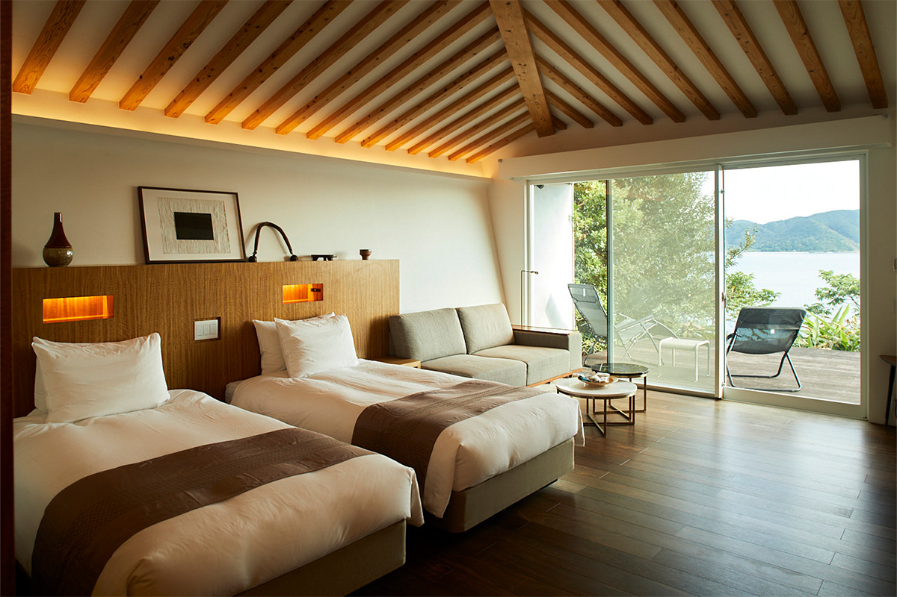
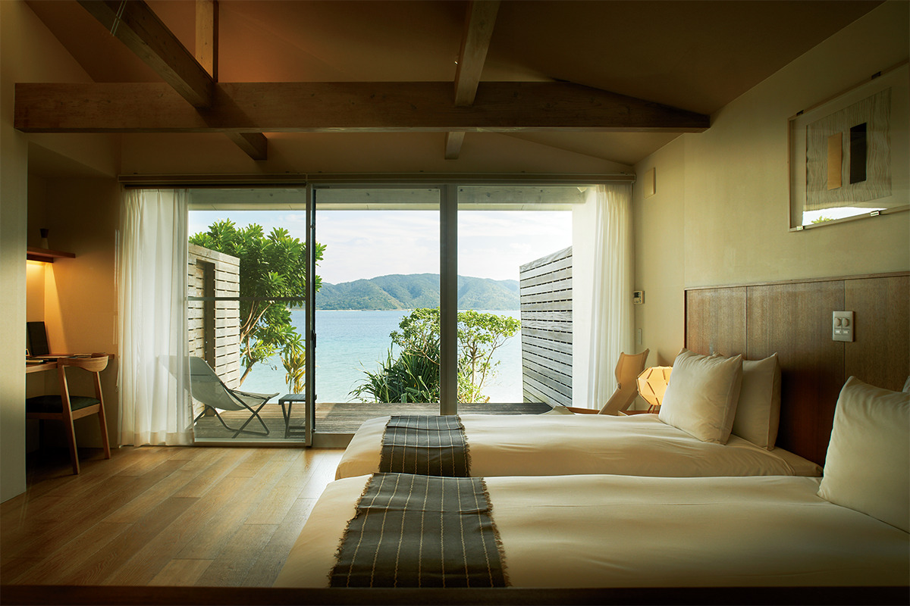
Если спросить персонал, куда сходить, назовут места, которых нет в путеводителях, и самые вкусные адреса острова. Сотрудники здесь вообще люди яркие: один хорошо разбирается в сётю из чёрного сахара, другая продолжает традицию местных песен «симаута». Разговоры с ними тоже часть отдыха.
Утро начинается с птичьих голосов и рассвета над морем. Можно выйти на террасу, глубоко вдохнуть и заняться йогой или растяжкой. Завтрак японский или европейский на выбор, чтобы не надоедал за несколько дней, и в обоих вариантах много местных продуктов. После завтрака отправляемся знакомиться с островом.
Ужин в AMANARI
Ресторан AMANARI готовит сезонные местные продукты вручную и по-новому прочитывает островную кухню. Ужин начинается с блюда, которое здесь подают всегда: суп-пюре из муки «нари», семян саговника. Когда-то на острове ели саговник, чтобы пережить голод, и этим супом ресторан напоминает, как ценна еда.
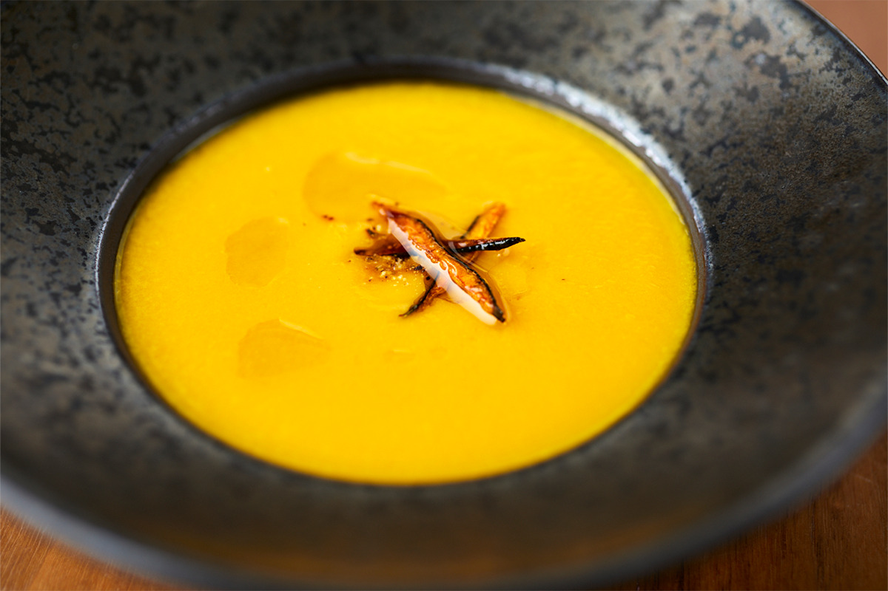
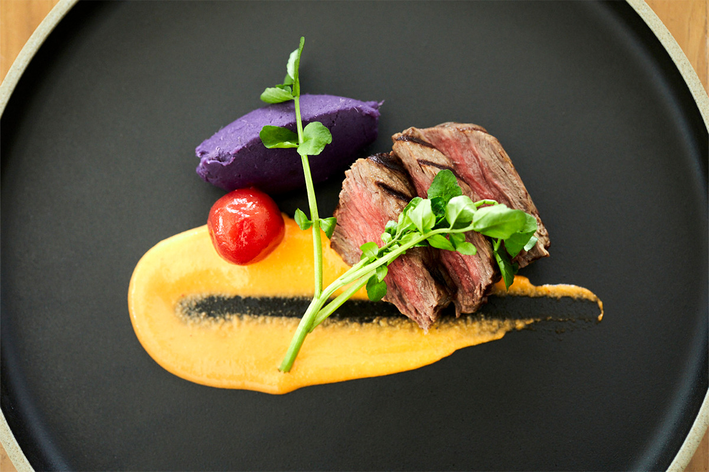
Амами-Осима к тому же место, где разводят голубого тунца. На первом ужине курс завершают отборные суши, и среди них три самые ценные рыбы Амами: коралловый групер «судзиара», рубиновый луциан «хамадай» и губан «макубу».
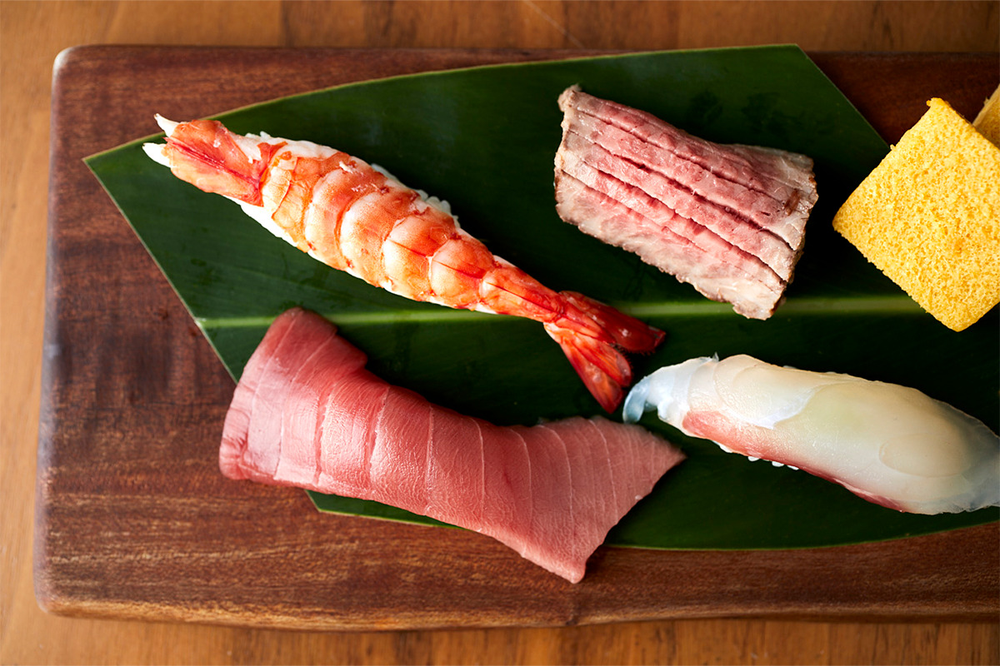
В баре ресторана собрано около 200 видов сётю из чёрного сахара со всех винокурен Амами. Есть и бутылки, которых нет в меню.
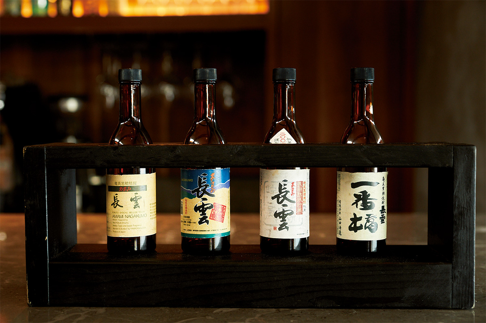
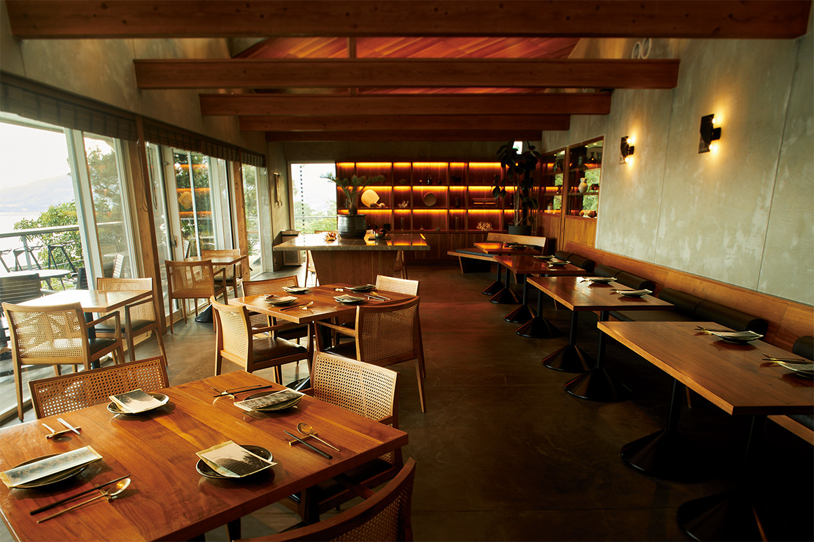
MIRU AMAMI
- Адрес
- префектура Кагосима, уезд Осима, посёлок Тацуго, Аситоку, 800
- Телефон
- +81 997-55-4066
- Номера
- 23
- Цены / Вход
- от 32 107 иен с человека за ночь с ужином и завтраком (налог и сервисный сбор включены)
- Заезд / выезд
- 15:00 / 11:00
- Как добраться
- около 20 минут на машине от аэропорта Амами
Ремесло
Осима-цумуги: шёлк, окрашенный грязью
Главное ремесло острова это осима-цумуги, шёлк с историей в 1300 лет. Секрет его глубокого чёрного цвета в окраске грязью, технике, которой нет больше нигде.
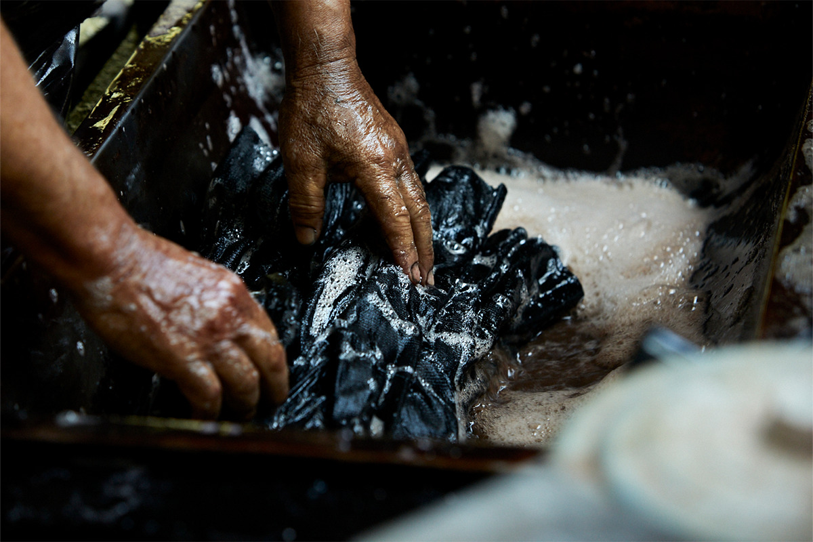
«Для окраски в грязи должно быть железо. Здесь эта техника и появилась потому, что метеорит, упавший в кратер Амами, принёс много железа»
мастер окраски грязью
Одна только окраска нитей занимает около 40 дней, а до готового рулона ткани проходит около года. Чутьё мастера-красильщика и умение ткать тонкий узор вместе дают тот самый красивый рисунок. Так же бережно на острове передают и еду: курицу с рисом в бульоне кэйхан или традиционный кисловатый напиток «мики» из риса.
Боги
Скалы, баньяны и лесной дух кэнмун
На Амами часто чувствуешь присутствие богов, но речь не о религии. Местные жители издавна видят божественное в самой природе и складывают перед ней ладони. В разговорах нам то и дело рассказывали о кэнмуне, лесном духе, который связывает природу Амами и людей, о камнях, которые почитают как защитников, о «татигами» и о праздниках, у каждой деревни своих. Таинственный лес и изумрудное море действительно ощущаются как особая сила, и благодарность природе, наверное, и есть суть такого отдыха.
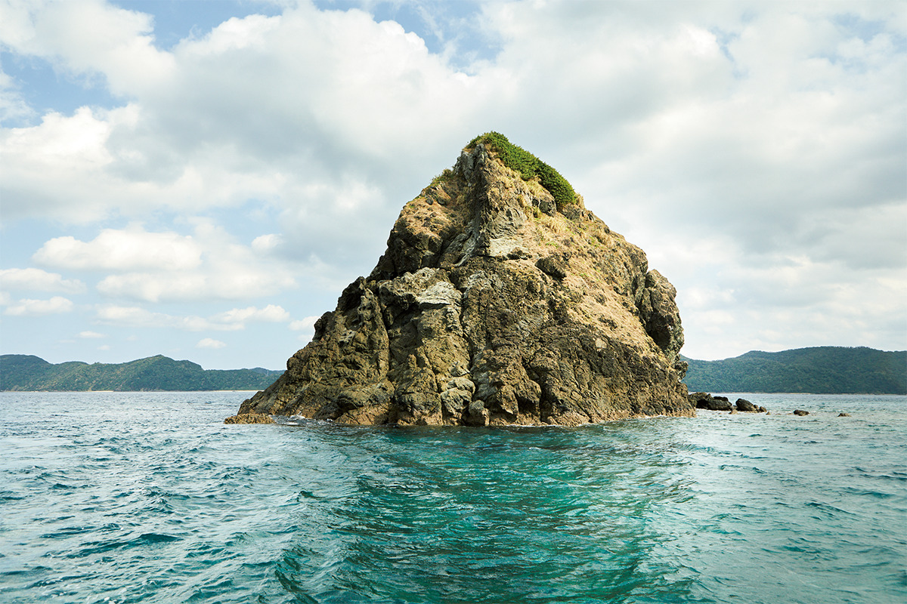
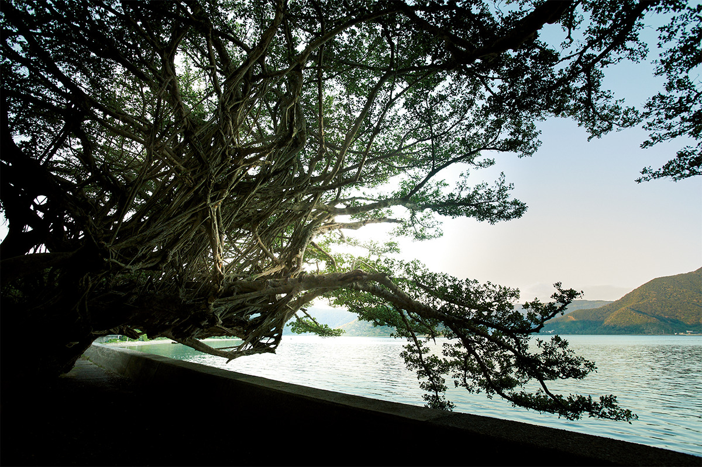
Деревня Осима-цумуги
В «Амами Осима цумуги мура» в посёлке Тацуго можно посмотреть все этапы производства ткани и самим окрасить грязью футболку. Вокруг раскинулся сад почти в 5 гектаров с субтропическими растениями, где живёт и сойка Лидта, так что гулять здесь приятно и без цели. Есть магазин сувениров из цумуги.
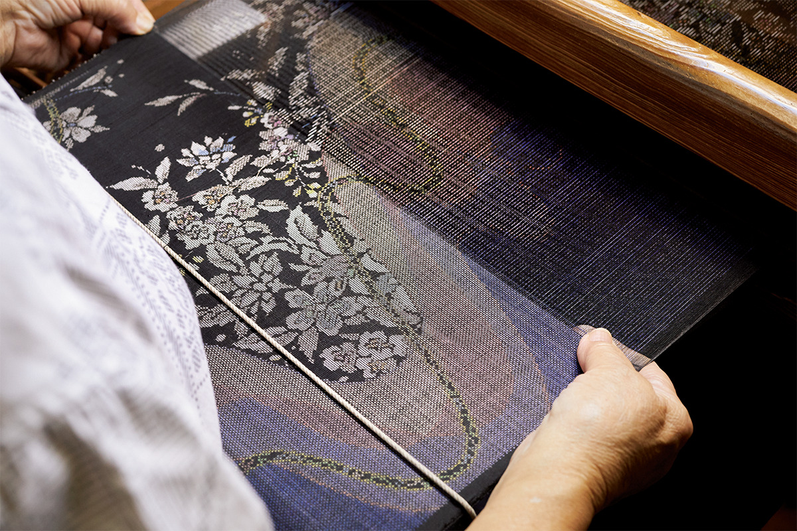
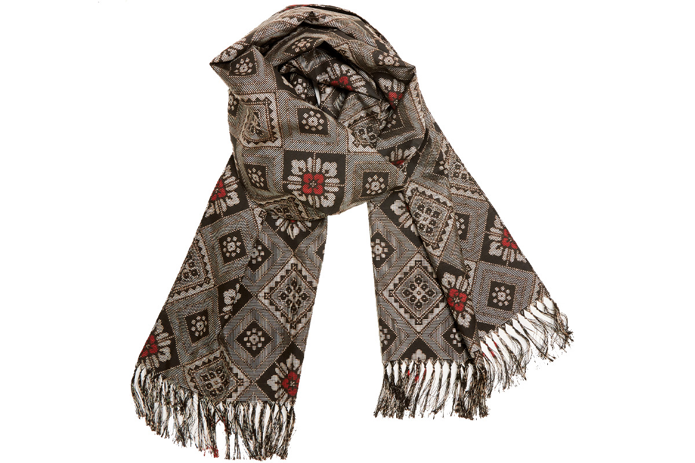
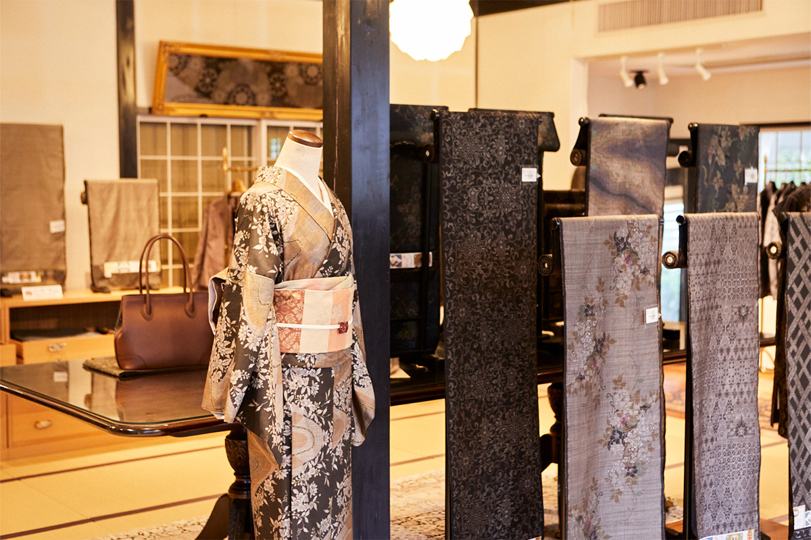
«Амами Осима цумуги мура»
- Адрес
- префектура Кагосима, уезд Осима, посёлок Тацуго, Акаоги, 1945
- Телефон
- +81 997-62-3100
- Часы работы
- 9:00–17:00
- Цены / Вход
- взрослые 550 иен, школьники 220 иен; магазин бесплатно
- Сайт
- tumugi.co.jp
Природа
Лес Кинсакубару, мангры и пляж Коутори
В первобытном лесу Кинсакубару живёт множество редких растений и животных, а огромные древовидные папоротники можно рассмотреть совсем близко. Не пропустите и прогулку на каноэ по мангровому лесу, который растёт на субтропической приливной отмели. Такие туры проводит местная компания «Санго то ядокари».
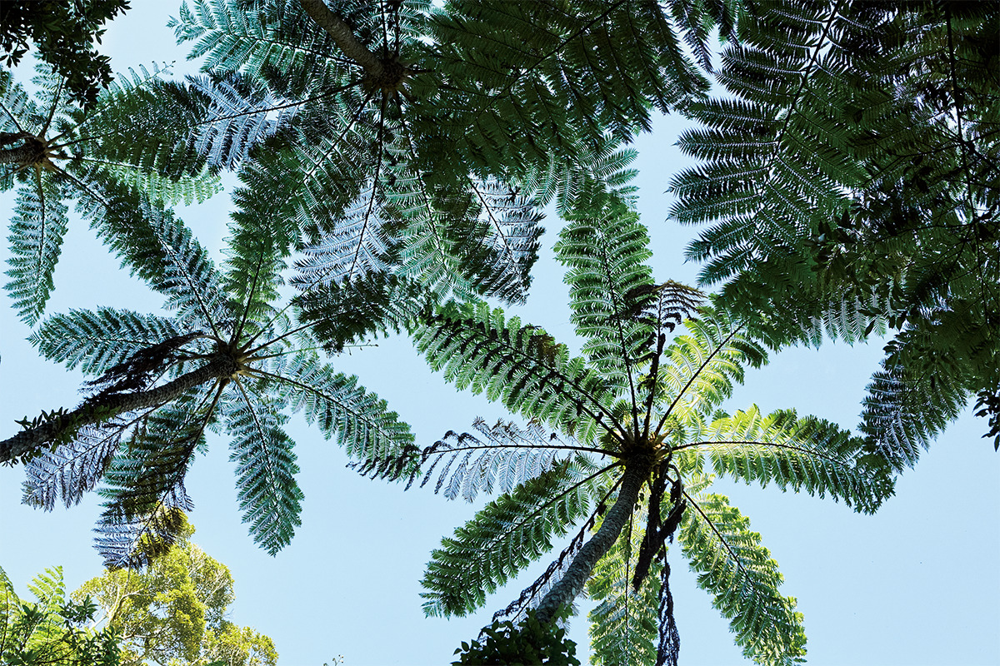
«Санго то ядокари»
- Адрес
- префектура Кагосима, город Амами, Касари, Сэцута, 1923-1
- Телефон
- +81 90-9941-6737
- Часы работы
- 8:00–18:00, туры 8:30–18:00 (зависят от приливов)
- Выходные
- нерегулярно
- Цены / Вход
- взрослые от 11 000 иен, дети от 9000 иен
- Сайт
- 35yadokari.jp
На море компания ON SHORE возит гостей на пляж Коутори, куда можно попасть только на лодке, а ещё предлагает снорклинг с лодки, сап и другие занятия. С января по март сезон китов, и шансы их увидеть высоки.
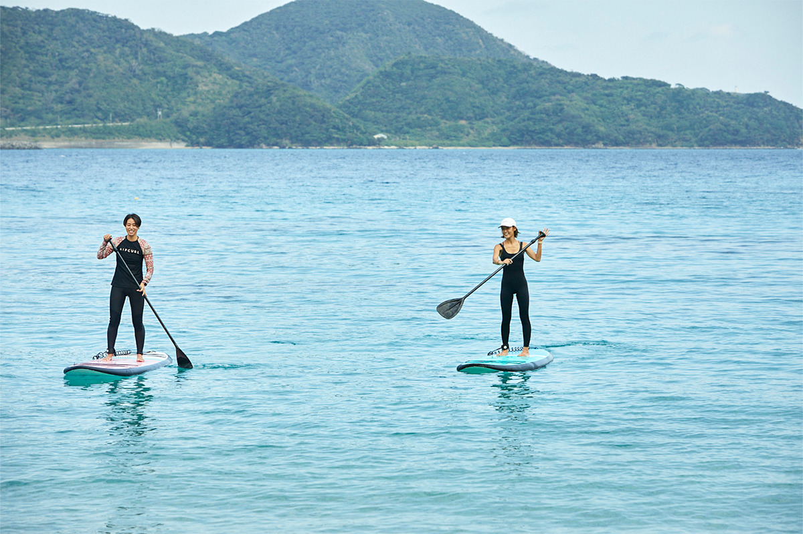
ON SHORE
- Адрес
- префектура Кагосима, уезд Осима, посёлок Тацуго, Оокацу, 2205-15
- Телефон
- +81 90-7907-4110
- Часы работы
- 8:00–20:00; туры около 150 минут (9:00–11:30, 12:00–14:30, 15:00–17:30)
- Выходные
- нерегулярно
- Цены / Вход
- взрослые 12 650 иен, дети 5–11 лет 8800 иен
- Сайт
- amamionshore.com
Еда
Кэйхан в «Хисакура»
Главное блюдо Амами это кэйхан: рис, на который выкладывают курицу и другие начинки и заливают горячим бульоном. В «Кэйхан Хисакура» особенно гордятся бульоном: для него варят кур с собственной птицефермы и приправляют только солью и соевым соусом. Бульон лёгкий, но насыщенный, и после такой еды приходишь в равновесие.
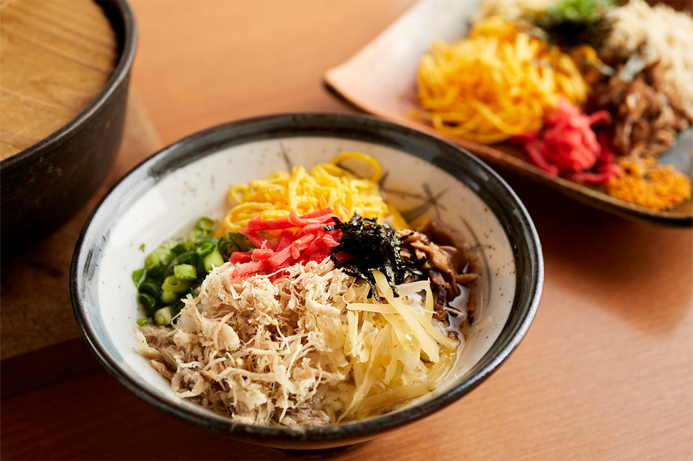
«Кэйхан Хисакура»
- Адрес
- префектура Кагосима, уезд Осима, посёлок Тацуго, Яири, 516
- Телефон
- +81 997-62-2988
- Часы работы
- 11:00–16:00 (последний заказ 15:30), до окончания продуктов
- Выходные
- нерегулярно
- Сайт
- hisakura
Ещё
Что успеть, если трёх ночей мало
На севере острова, в Касари, стоит курортный отель THIDA MOON с музеем осима-цумуги, из номеров которого видны море и скала-татигами (о нём у нас есть отдельная статья).
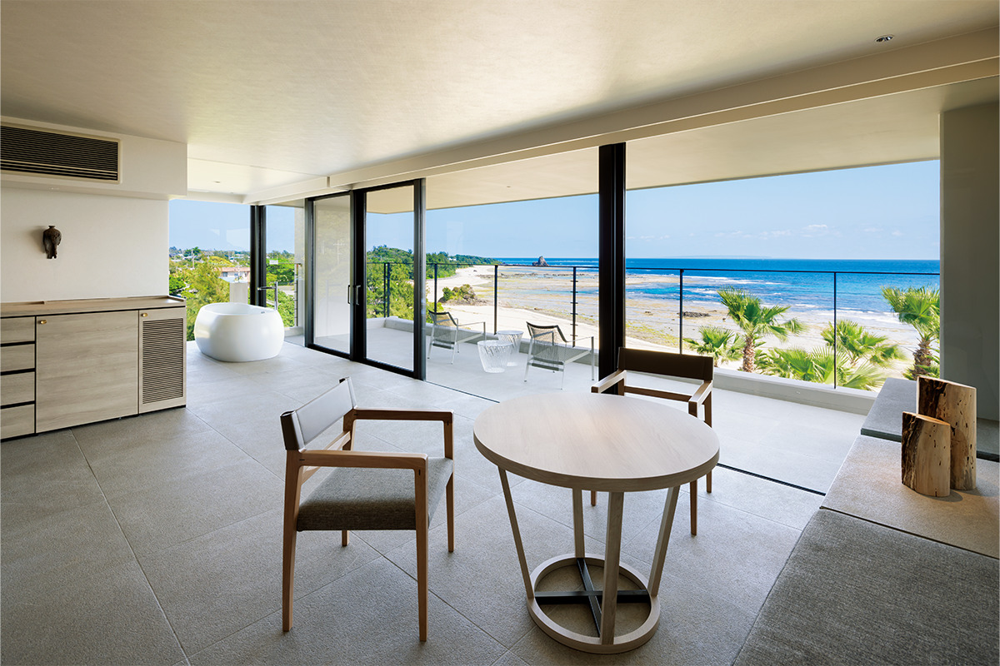
В «Араба сёкудо» при гостевом доме «Аранами но ядори» готовят местные женщины. Задача столовой показать жизнь острова через еду и сохранить для следующих поколений то, что важно деревне, поэтому здесь подают домашние блюда, знакомые с детства, и у каждой хозяйки свой вкус.
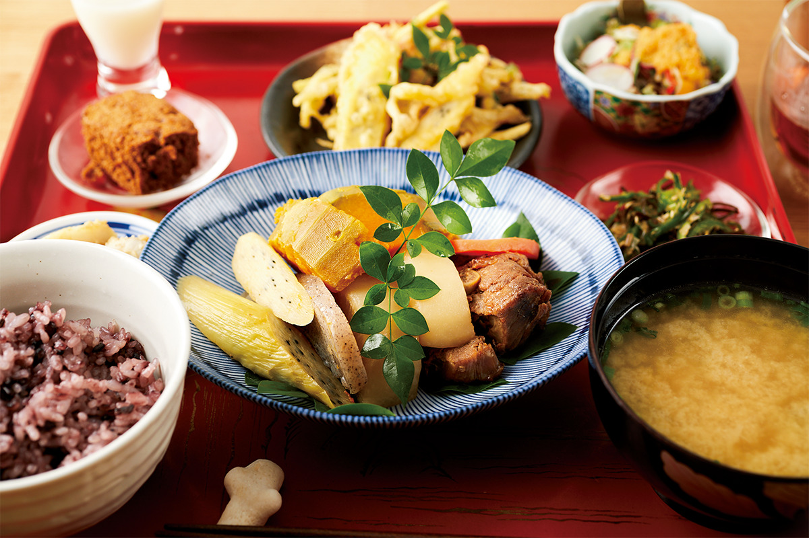
«Араба сёкудо»
- Адрес
- префектура Кагосима, уезд Осима, посёлок Тацуго, Икисато, 423
- Телефон
- +81 997-58-8842
- Часы работы
- обед 11:30–14:00, кафе 14:00–17:00
- Выходные
- среда и четверг
- Сайт
- yado.e-akina.com
Визит-центр национального парка «Амами сидзэн кансацу но мори» обновили в октябре 2022 года, добавив комнату отдыха и выставочный зал, где есть чучело амамийского кролика. Дождей на Амами много, и в непогоду это хорошее место, чтобы познакомиться с природой. Со смотровой площадки открывается отличный вид, а на территории растёт пасания возрастом почти 100 лет.
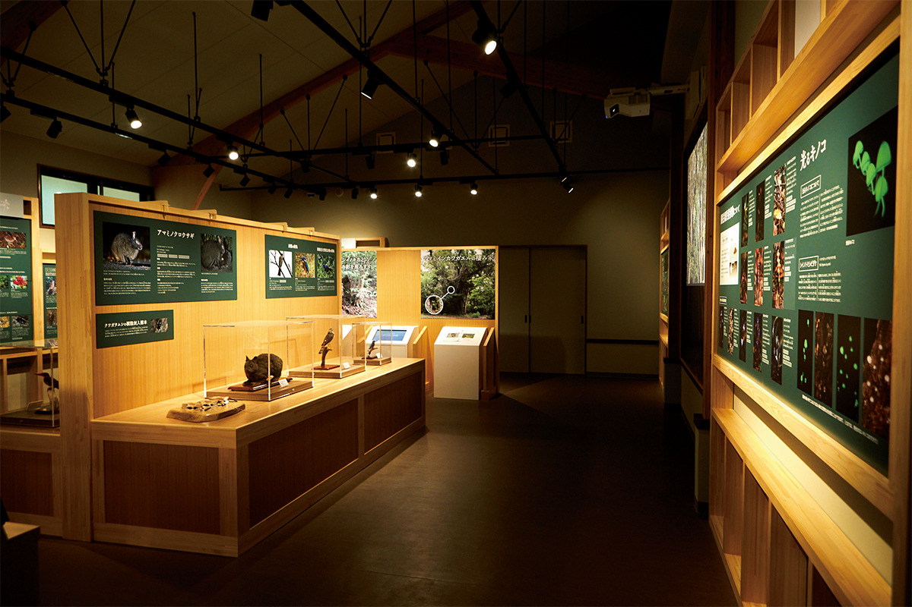
«Амами сидзэн кансацу но мори»
- Адрес
- префектура Кагосима, уезд Осима, посёлок Тацуго, Тацуго, Фукухири, 1233-3
- Телефон
- +81 997-54-1329
- Часы работы
- 9:00–16:00
- Выходные
- новогодние праздники
- Цены / Вход
- «Дом леса» 100 иен, гид 1500 иен (по записи)
- Сайт
- anof-tatsugo.jp
Фото: Кэндзи Окадзаки.